항공모함 잡담 (7/22)
게시: 2021-07-22T06:30:16+09:00
<Arresting wire의 장력> 1944년 3월 호위항모 USS Charger(CVE-30, 1만1천톤, 17노트)의 연습 착함에서 벌어진 일. 저 F4U Corsair는 그대로 뒤집히며 엔진이 든 코가 부러짐. 조종사 사망. 전체 영상을 보면 1) 조종사가 착함할 때 어정쩡하게 뜬 상태로 착함했고 2) arresting wire가 너무 느슨. 둘 중 어느 하나만이라도 제대로였다면 살 수 있었으나 두 가지 요건이 다 충족되지 않아 tail hook이 걸리고도 저런 참사가 발생. 저 arresting gear의 적정 tension은 항공기 기종마다 다르고 항공기가 소지한 연료 잔량과 무장 잔량 등에 따른 착함 무게에 따라서도 달라져야 함 (사진3). 의외로 세심한 조종이 필요한 부분인데 그것도 무수한 시행 착오를 거쳐 얻을 수 있는 정보. 제대로 된 CATOBAR 정규 항모를 operational status로 굴린다는 것이 얼마나 어려운 일인지 따로 설명이 필요없음.
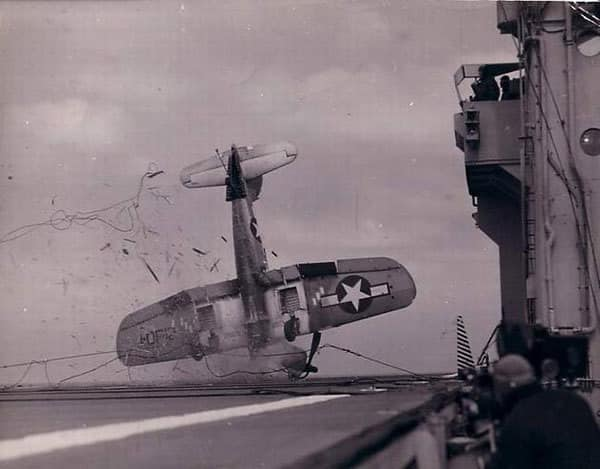 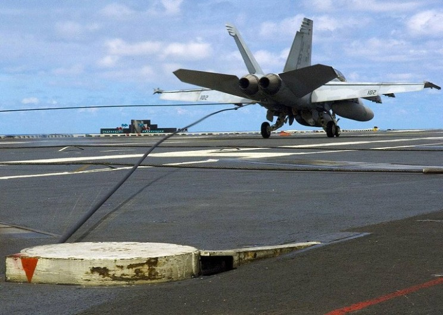 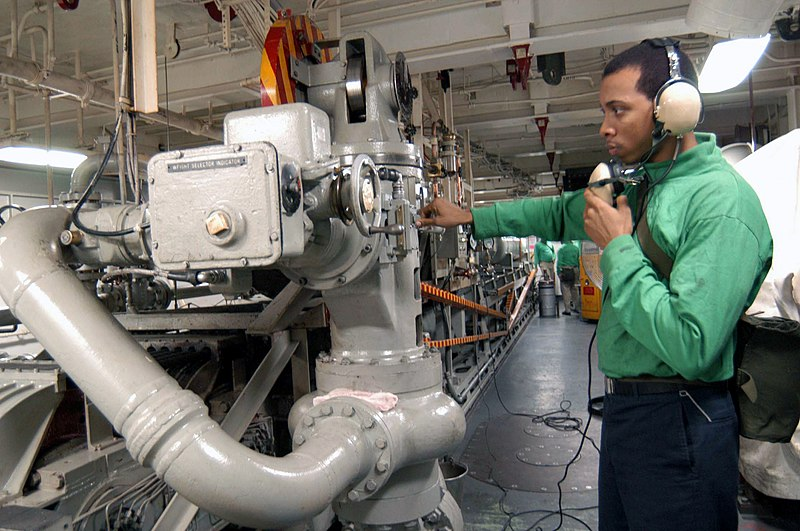
<왜 여왕폐하는 탈원전을?> HMS Queen Elizabeth는 2개의 36MW짜리 가스터빈과 4개의 10MW 디젤엔진으로 힘을 내는 전기 추진 방식. 원자력을 썼다면 30노트는 쉽게 내었을텐데 현재는 대략 25노트 정도의 속도라고 발표. (최고 속도는 자료에 따라 오르락내리락함.) 항공모함의 속도는 무조건 빨라야 하는데, 이는 단지 전장에 빨리 도착한다는 점 외에도, 항공기가 좀 더 무거운 무장을 하고 쉽게 이륙할 수 있도록 맞바람을 일으키는데도 필요하고 또 잠수함을 피하는데도 필요하므로 매우 중요한 요소. 그런데 왜 여왕폐하는 속도를 까먹으면서까지 탈원전을 하셨을까? 몇가지 이유가 있음. 1) 원자력으로 간다고 해도 어차피 함재기용 항공유 보급 때문에 항구에 들러야 함 - 먹을 것만 보급 받으면 되는 핵잠수함과는 사정이 다름. - 보통 항공유 탑재량은 1달치. 미국 핵항모도 유조선 등을 통해 1달에 1번씩 항공유를 재급유 받음. 2) 핵발전기에는 인력이 더 필요함 - 영국 해군도 인원 줄여야 하는 마당에... 게다가 핵발전기 유지보수 인력은 모집하기도 쉽지 않음 3) 세계의 적지 않은 항구들이 핵추진 선박의 입항을 금지함 - 여왕폐하 만든 이유 중 하나가 국위 선양인데 이건 항구에 입항해야 함. 그런데 입항을 못하면 대략 난감. - 심지어 영국도 핵추진 항모를 받아들여 유지보수할 nuclear-certified port가 딱 2군데, Devonport와 Faslane 뿐임. 4) 핵발전기 비쌈 - 지상용 핵발전기도 비싸지만 항모용은 더 비쌈. 소형화도 어렵지만 거친 파도의 요동 속에서 제어봉 조정하려면 기계적으로도 훨씬 복잡함. 5) 나중에 폐기할 때 어쩔거임 - 무엇보다 결국 50년 쓰고 나서 항모 폐기할 때 핵발전기 어쩔 것인지 대책이 없음. - 미국은 어떻게 하느냐? 미국은 Puget 해군조병창에 특별 구역이 있고 거기서 해체 작업한 뒤 핵폐기물은 (땅이 넓으니) 그냥 어디 먼 곳에 파묻음. 영국은 손바닥만 해서 그게 안됨. 영국은 아직 단 1척의 원자력 잠수함도 폐기 못하고 있음.
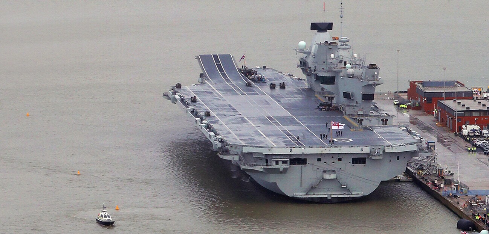
<Crack ship이란 무엇인가> Crack ship이라는 것은 영어사전에서는 나오지 않는 표현인데, 쉽게 말하면 '정예함'. 이게 꼭 가장 크고 가장 강력한 군함을 가리키는 것이 아니라 무슨 이유에서건 로열 네이비에서 가장 우대해주고 상징으로 쳐주는 군함을 뜻함. Crack ship은 당연히 비공식적으로 자의반타의반으로 인정되는 것일 뿐 공식적으로 'HMS xxx가 crack ship이다' 라는 것은 없고, 또 꼭 1척만 crack ship으로 인정되는 것도 아님. Crack ship은 배의 성능이 아니라 승조원들의 자질과 옷차림, 청소 상태, 군기 등으로 티가 남. WW1 이후 WW2 초기까지 로열 네이비의 crack ship은 자타공인 전함계의 소녀시대 HMS Hood (사진1). HMS Hood의 승조원들은 똘똘한 애들로 주로 선발되었고, 소위 peer pressure에 의해 군기가 유지되었으며, 승조원들의 자부심도 쩔었음. 그러나 가장 티가 나는 부분은 무엇보다 함대 내의 스포츠 행사. 군함끼리의 스포츠 경기에서도 HMS Hood의 팀이 당연히 이길 것으로 다들 기대했고, 승조원들은 그에 따라 심리적 압박도 심했다고. ** 근데 당시 crack ship으로 불리던 HMS Hood, 그리고 그 뒤를 이은 HMS Prince of Wales가 모두 어이없이 꼬로록 한 것은... ** 정작 WW1~WW2 기간 중 가장 큰 공적을 세운 것은 낡아빠진 HMS Warspite (사진2). ** 현재 로열네이비의 crack ship은 아무래도 여왕폐하. 따라서 승조원들의 스포츠맨쉽도 매우 중요함. (사진3)
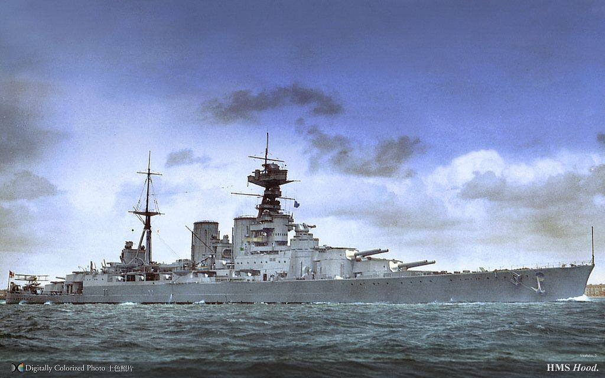 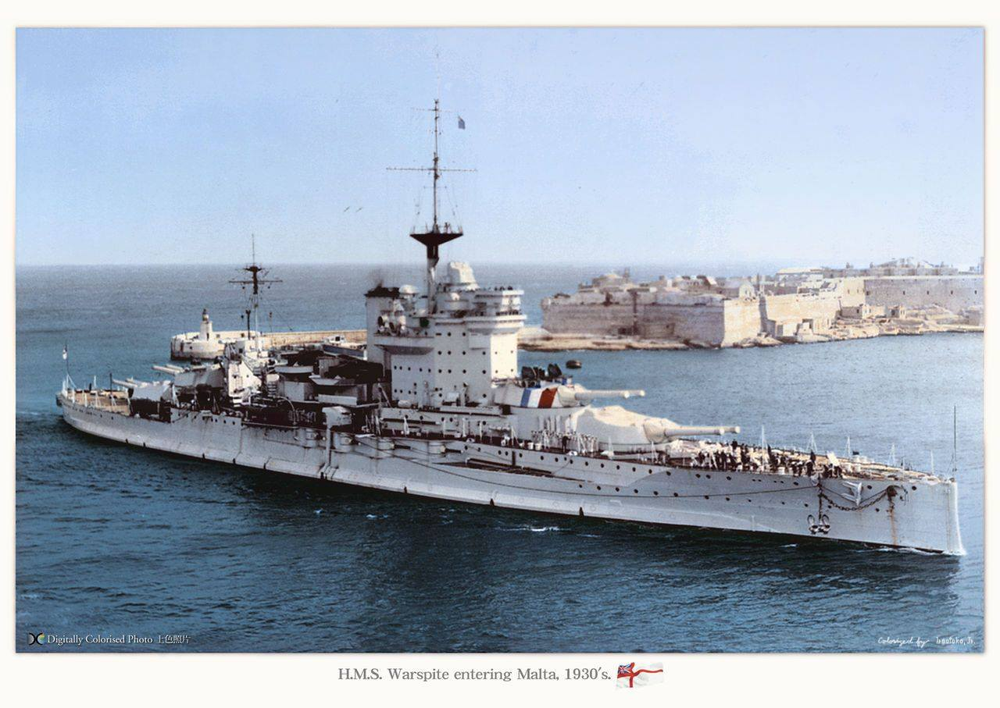 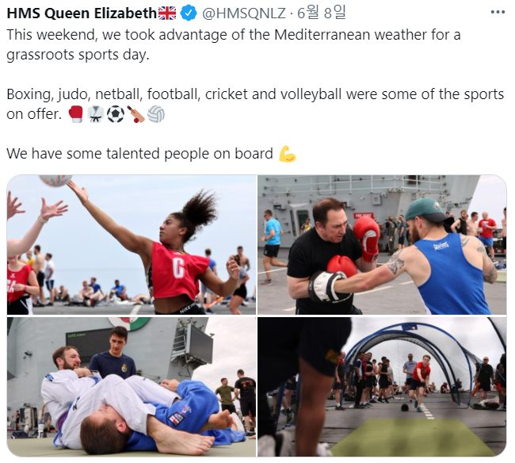
<Swordfish가 남긴 점멸 신호 내용은?> 1941년 HMS Hood의 복수를 위해 로열 네이비 전체가 동원되어 Bismarck (사진1, 5만톤, 30노트)를 잡으러 다닐 때, 항모 HMS Ark Royal의 무전실은 넘쳐나는 메시지들을 수신하고 해독하고 타이핑하느라 정신이 없었음. 그로 인해 정작 출격하는 14대의 Swordfish들은 자신들과 비스마르크 사이에 영국 순양함 HMS Sheffield (1만1천톤, 32노트, 사진2)가 파견되어 있다는 것을 통보받지 못했음. 잔뜩 흐린 거친 바다 위를 날던 Swordfish들은 앞에 뭔가 보이자마자 "저 놈이 비스마르크"라며 어뢰 투하 코스로 들어감. 아크로열의 조종사들은 모두 쉐필드를 오랫동안 보아왔고, 비스마르크는 쉐필드의 거의 5배 덩치인데다, 결정적으로 비스마르크는 굴뚝이 하나, 쉐필드는 둘이었음. 못 알아볼 리가 없었으나 못 알아봤음. 소드피쉬 편대들이 자기를 공격하러 온다는 것을 깨달은 쉐필드는 당황하지 않고 오히려 어뢰 쏘기 좋은 측면을 드러내며 선회. 이유는 자신의 측면을 보여주면 굴뚝 수를 보고서라도 자기가 비스마르크가 아니라는 것을 알아볼 것이라고 믿은 것. 그런데도 사람들은 보고 싶은 것만 본다고, 소드피쉬 조종사들의 눈에 쉐필드는 틀림없이 비스마르크였음. 소드피쉬들은 2차례에 걸쳐 9발의 어뢰를 투하. 다행히 다 빗나갔음. 쉐필드 승조원들의 감정을 진짜 상하게 했던 것은 마지막 어뢰를 투하하고 스쳐가는 소드피쉬가 쉐필드에게 후방 기관총까지 신나게 긁어대고 갔다는 것. 그나마 나중에야 실수를 깨달은 소드피쉬 하나가 아크로열로 돌아가면서 후방 좌석의 휴대용 점멸 신호등으로 뭔가 열심히 모르스 신호를 보냄. 내용은... "Sorry for the kipper" (그 훈제 청어, 미안하게 됐수다)
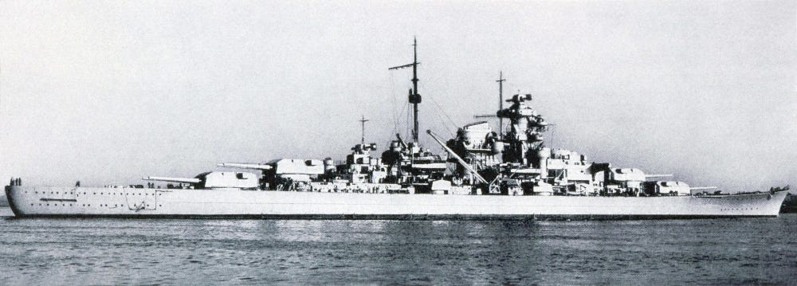 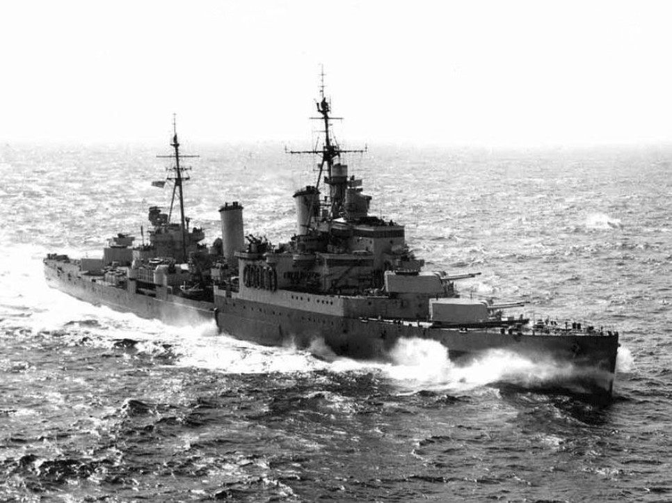 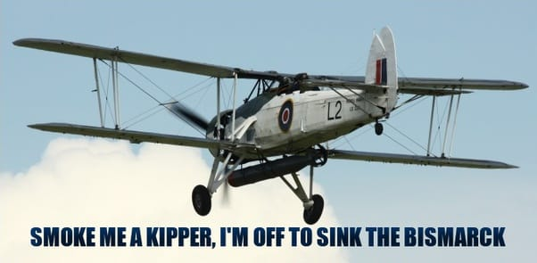
<미해병대가 평가하는 여왕폐하> 미해병 지휘관 Doran 대령 (사진1) : "우리 동네에 가서 내가 이런 소리하더라는 말은 하지 말아줘요. 이 배가 내가 여태까지 타 본 배 중 최고에요. (Don’t tell anybody back home but it is probably the nicest ship I have been on.)" ** 근데 신문에 났음. 사진과 이름까지. ( https://www.portsmouth.co.uk/news/defence/american-military-chief-hails-hms-queen-elizabeth-the-best-ship-he-has-ever-been-on-3246908 )
** 4만톤짜리 강습상륙함 (사진3, USS America, LHA-6) 타다가 6.5만톤짜리 항모 타니까 당연히 좋을 듯.
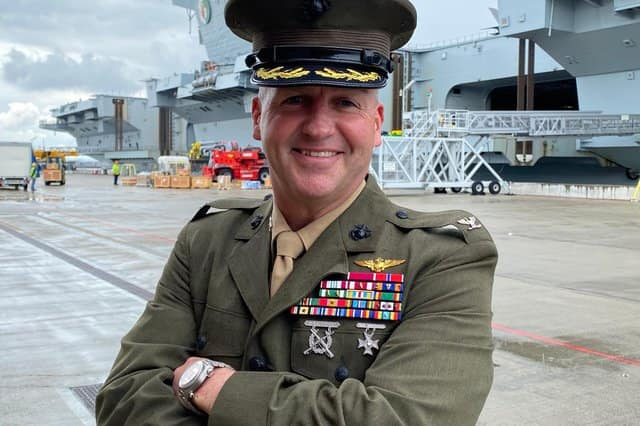 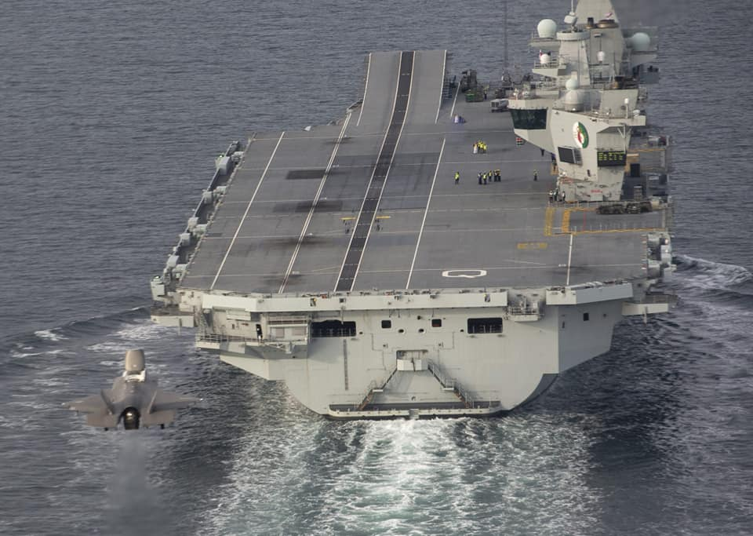 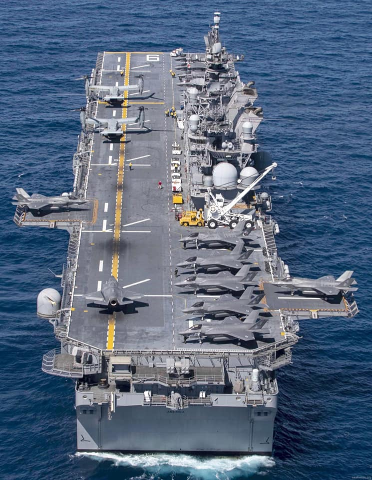